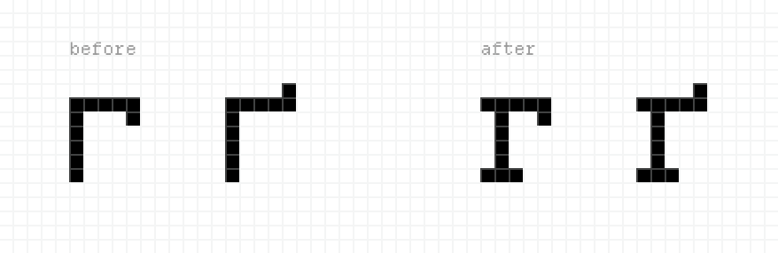
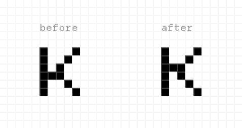
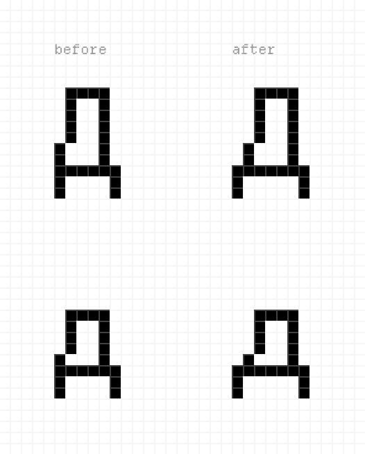
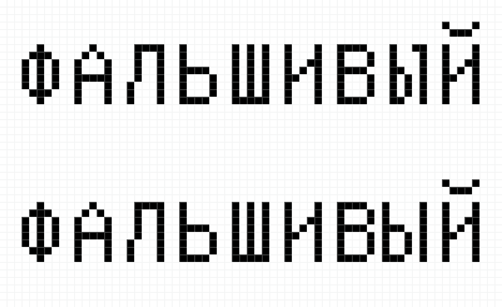

Departure Mono
Cyrillic
Hi Helena,
I’d like to share some of my testing results with you. Please note that I’m not a font designer and don’t have the proper expertise to evaluate everything. I might have missed some important details, but I’ll do my best to be helpful.
How I tested:
- I used only Ukrainian and Russian texts.
- The text sources included a couple of poems, pangrams, and short excerpts from my own blog posts.
- I tested everything in regular casing and ALL CAPS.
Iʼll try to answer your questions below.
Let me know if anything feels unnatural / Do any of the letters look off?
Hereʼs what I have found:
- Letters
Ы ы: The right vertical bar has a tiny “hook” at the top, which feels unnatural to me. -
Lowercase letters
г/ґ: The horizontal bars seem too wide. However, it works well inГ/Ґdue to the taller vertical bar.In other monospace fonts, they often add serifs to address this issue, similar to what you have in
rbut with a shorter leg:
- Letters
Й й: The breve feels unusually wide. Iʼm not sure what to suggest here. A version with a macron («Раӣон») appears cleaner to me, but itʼs not so authentic. -
Letter
к: It looks more natural to my eye if flipped vertically:
*Note*: The capital
Кdoesnʼt have this issue. However, I think you might want to consider using the same shape as the LatinK— it doesnʼt look unnatural in Cyrillic text, but it appears slightly more legible. -
Letters
Д дlook more usual with a wider base. This might occasionally make words appear a bit tight, but it didnʼt look bad to me. See an example.
- Letters
Ш шfelt a bit too narrow at first, but when I tried widening them, I saw the kerning would suffer. So it might make sense to keep them as they are.
Are these too narrow? Ы ы
They are a little bit narrow, yeah. I didnʼt find it as critical as the “hook” I mentioned earlier, but a wider version might work better. I tried it — here, Ы is tighter on the left, yet it looks more natural to me:

Any legibility or readability issues?
No, I donʼt think I have anything to add to the issues I mentioned above :)
Any missing characters?
I havenʼt found any.
Do you have a favorite Cyrillic font I can use for reference?
I think SF Mono has a decent Cyrillic version — itʼs my font of choice for the code editor and terminal. As for other, non-monospace fonts, SF Pro is quite good as well, and Inter has a solid (updated) Cyrillic version.
I also just noticed one of my favorite Ukrainian font designers, Dmytro Rastvortsev, has his own pixel font family called Krapka. You might be interested to check it out here.
---
That’s it! Please feel free to contact me if you have any further questions. Thank you for the amazing and inspiring work, Helena!
Дякую за чудовий шрифт — Спасибо за замечательный шрифт!
Alexander Zaytsev ◊ zaytsev.io
OCT 2, 2024